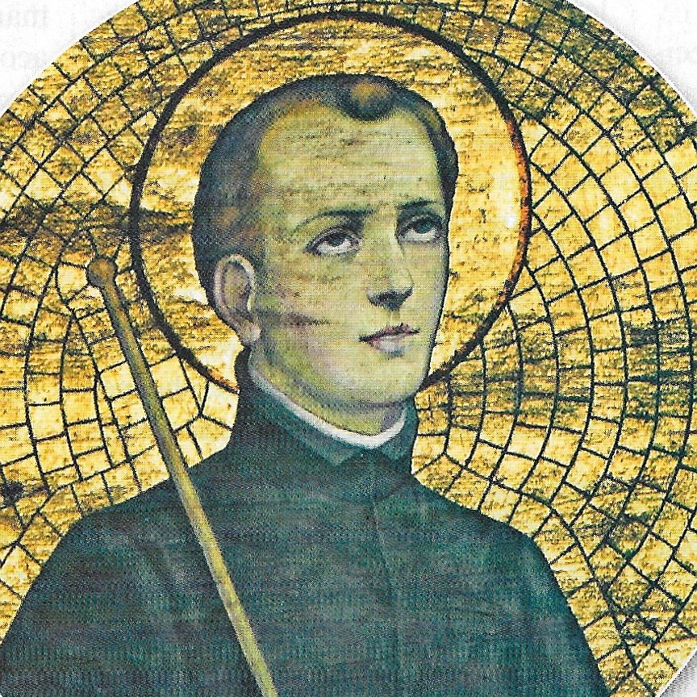

"SÃO Estanislau KOSTICA"

"APAIXONADO POR DEUS E NOSSA SENHORA, FUGIU A PÉ DA ALEMANHA PARA ROMA A FIM DE SER SACERDOTE. TODAVIA, LOGO NO INÍCIO DOS ESTUDOS EM ROMA, FALECEU. A SUA MISSÃO EXISTENCIAL ESTAVA CUMPRIDA, E DEUS RESERVOU AO JOVEM Estanislau UMA GLÓRIA INSUPERÁVEL E ETERNA".
=ÍNDICE=